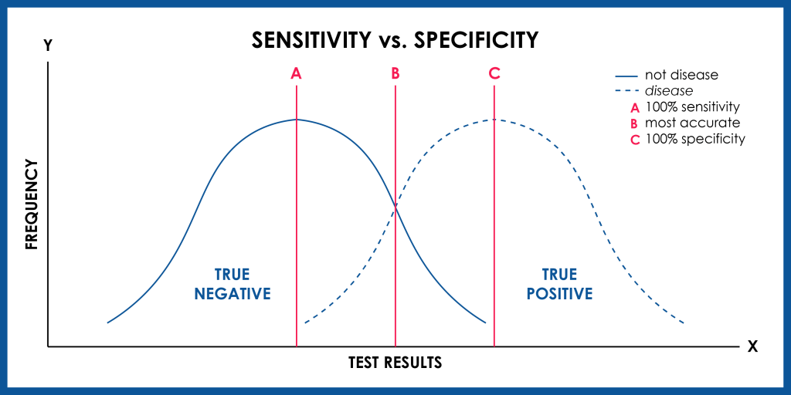
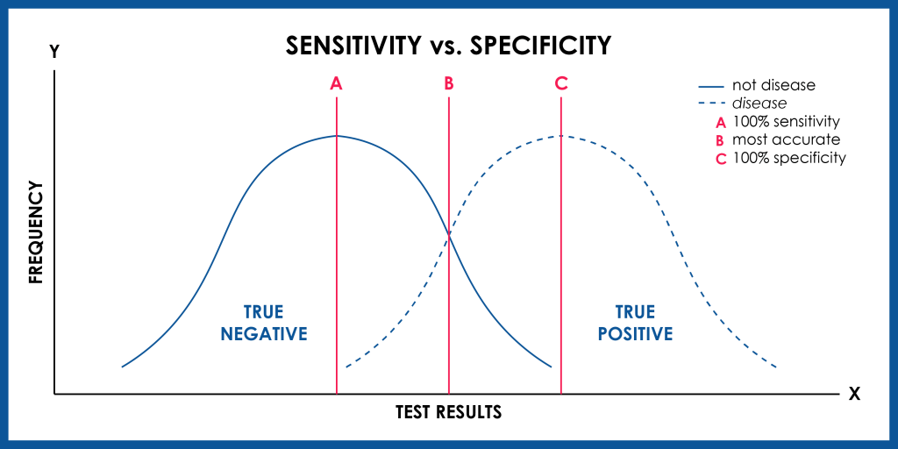

Validation and Colocalisation
Laura Cooper
Research Fellow, CAMDU
Navigation:
- Left/right arrow keys for previous/next slide
- 'm' key to get to navigation menu
- Escape for slide overview
Acknowledgements
Slides adpated from presentations by:
- Dave Mason, formerly University of Liverpool: https://pcwww.liv.ac.uk/~dnmason/ia.html
- Erick Martins Ratamero, formerly University of Warwick
- Lewis Mosby, University of Warwick
- Philo van Kemenade (@phivk)
- Some material also from ImageJ website
Validation
Does the macro work? Are the measurements correct?
Validation
After designing an image analysis workflow it is important to validate it, especially if you are planning to use the same process on multiple images. The validation strategies used will depend on they type of problem.
- Measurement
- Classification
- Segmentation
Your final workflow may contain some or all of these problems. In the following slides there are some examples of quantitative measurements that can be used to evaluate the performance for each problem.
Example Validation of Measurement Problem
Aim: Estimate a scalar or vector quantity
Method: Calculate the mean relative error
\[ mean\ relative\ error = {measured\ value - true\ value \over true\ value} \]
Example Validation of Classification Problem
Aim: Decide if something is present in an image
Method: Calculate the sensitivity and specificity
\[ sensitivity = {TPs \over TPs+FNs} \] The fraction of present things that are correctly detected, 0 none detected to 1 all detected \[ specificity = {TNs \over TNs+FPs} \] The fraction of correct detection when the thing is not present, 0 all falsely detected to 1 none falsely detected
 

Image from www.genomenon.com
Example Validation of Segmentation Problem
Aim: Estimate the boundary regions of an image
Method: Calculate the difference between the segmented and ground truth boundaries \[ root\ mean\ square\ error = \sqrt{{\displaystyle\sum\limits_{i=1}^{N}(\boldsymbol{x}^s_i-\boldsymbol{x}^g_i)^2 \over N}}\] where \( N\) is the number of points, \(\boldsymbol{x}^s_i\) are the points that make up the segmented boundary (green) and \(\boldsymbol{x}^g_i\) are the points that make up the ground truth boundary (magenta)

Different metrics can be used, e.g. Hausdorff distance
What's true?
- The true value or ground truth should be evaluated independently from the image analysis
- The method may depend on the area of study. There is often a method that is considered the "gold standard" in the community.
Training and Testing
- Let's assume you have some ground truth data for your images that has been obtained using the "gold standard" method
- You also have the original dataset, on which no analysis has been performed
- When developing an algorithm, a portion of the data will be used for training the algorithm and a portion will be used for testing
- More data is always better!
For more information on validation see Chapter 10 of Handbook of Medical Imaging, Volume 2. Medical Image Processing and Analysis (K. Bowyer, 2000)
Applications: Co-localisation
Use cases, some simple guidance, JaCoP

Adapted from a slide by Fabrice Cordelieres
Colocalisation is highly dependent upon resolution! Example:


Same idea goes for cells. Keep in mind your imaging resolution!
We will walk through using JaCoP (Just Another CoLocalisation Plugin) to look at Pearson's and Manders' analysis
If you're doing colocalisation analysis at all, I highly recommend reading the companion paper https://doi.org/10.1111/j.1365-2818.2006.01706.x

Pearson's Correlation Coefficient

- For each pixel, plot the intensities of two channels in a scatter plot
- Ignore pixels with only one channel
- P value describes the goodness of fit (-1 to 1)
- 1 = perfect correlation
- 0 = no positive or negative correlation
- -1 = exclusion
Figure from https://doi.org/10.1111/j.1365-2818.2006.01706.x

- Download
JaCoP - Run
[Plugins > Install Plugin], point to the jar file - Restart Fiji
- Open
11-colocA.tifand12-colocB.tif - Run
[Plugins > JaCoP], uncheck everything except Pearsons, select the same image for both channels - Repeat for different combinations of these images and also
13and14
- Great for complete colocalisation
- Unsuitable if there is a lot of noise or partial colocalisation (see below)
- Midrange P-values (-0.5 to 0.5) do not allow reliable conclusions to be drawn
- Bleedthrough can be particularly problematic (as they will always correlate)

Manders' Overlap Coefficient
- Removes some of the intensity dependence of Pearson's and provides channel-specific overlap coefficients (M1 & M2)
- Values from 0 (no overlap) to 1 (complete overlap)
- Defined as "the ratio of the summed intensities of pixels from one channel for which the intensity in the second channel is above zero to the total intensity in the first channel"
- Use the same images from last time (
11,12,13and14) - Run
[Plugins > JaCoP], check both Pearsons and Manders - Run for different combinations of these images
- Note the differences in coefficients especially in images 13 and 14
- [BONUS] add some noise
[Process > Noise > Add Noise]or blur your images[Process > Filters > Gaussian Blur]and see how that affects the coefficients